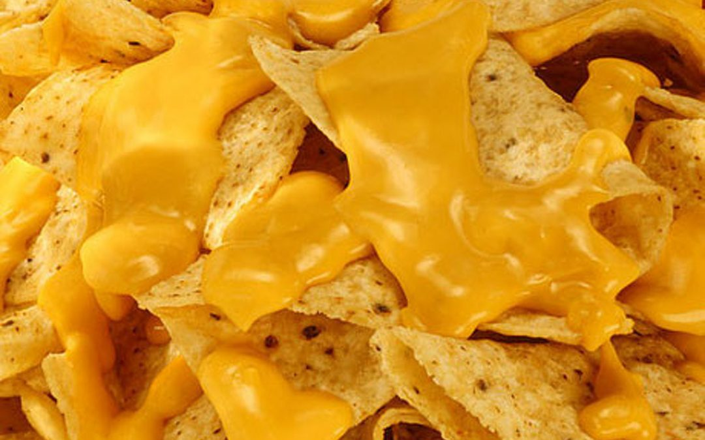
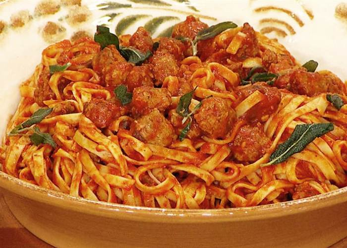
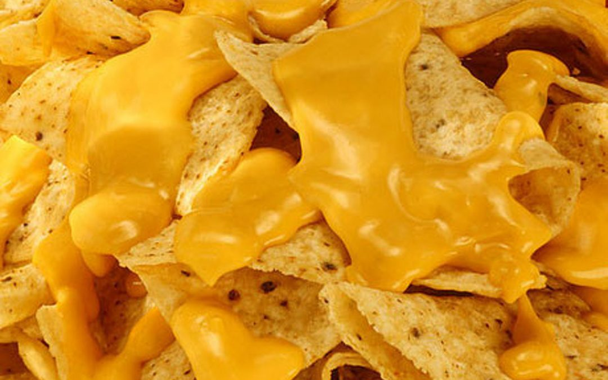
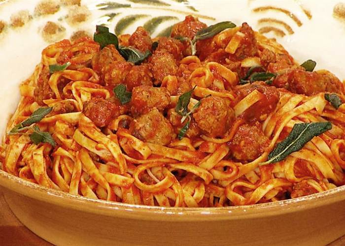

Cocinar es un arte, cocinar son reuniones con amigos, familiares y sonrisas de tardes soleadas. Si queres elaborar comida vegetariana o realizar la comida que mas te guste rápido y facil te mostraremos como hacerlo. Tambien encontra recetas de como hacer un menu saludable y economico no lo dudes mas, esta es tu web.
Aprende a como producir hamburguesas de carne y vegetarianas, fajitas(veggis o de pollo y carne), papas, pizzas, y todas tus comidas favoritas para "matar la gula" o para el almuerzo o la cena en comerapidoen5.com.
En este articulo te mostraremos como realizar los mejores postres(de forma muy elaborada o no tan elaborada), desayunos o meriendas y como realizar las mejores comidas de forma vegetariana o con carne. Para cocinar rapidamente y fácil.
En este articulo te mostraremos como realizar los mejores postres(de forma muy elaborada o no tan elaborada), desayunos o meriendas y como realizar las mejores comidas de forma vegetariana o con carne. Para cocinar rapidamente y fácil.
En este articulo te mostraremos como realizar los mejores postres(de forma muy elaborada o no tan elaborada), desayunos o meriendas y como realizar las mejores comidas de forma vegetariana o con carne. Para cocinar rapidamente y fácil.